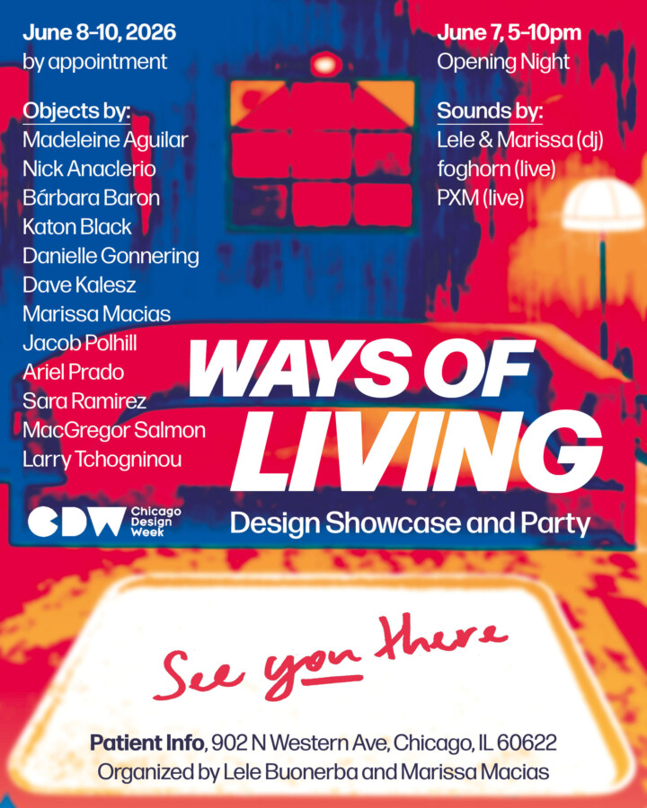

Ways of Living: Design Showcase and Party
As part of Chicago Design Week 2026 and right after NeoCon preview day wraps up, Lele Buonerba and Marissa Macias are thrilled to host a design showcase and party at Patient Info in Chicago’s Ukrainian Village. Please join us for opening night which will feature drinks and music in the patio from 5-10pm on Sunday, June 7.
Objects by:
Madeleine Aguilar
Nick Anaclerio
Bárbara Baron
Katon Black
Danielle Gonnering
Dave Kalesz